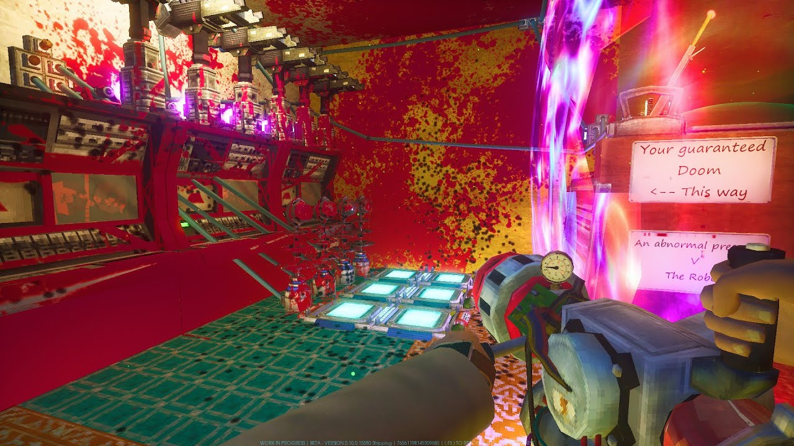
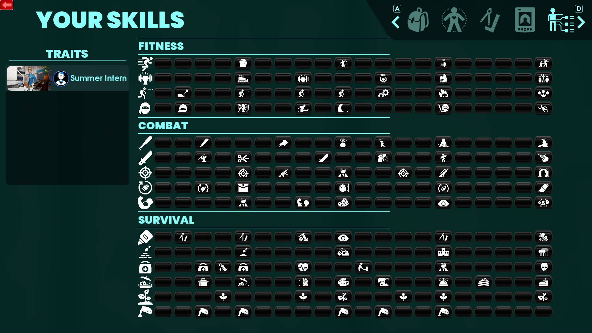
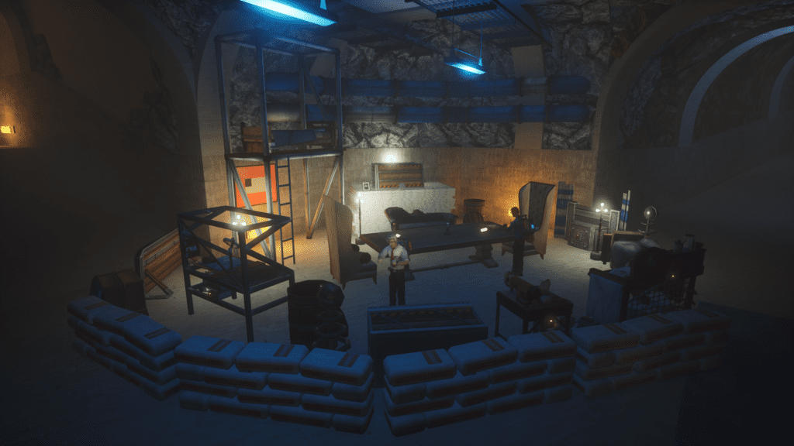

Gameplay tips for Abiotic Factor
This pages will give you helpful tips for the game to help make your gameplay more easier.
-

Gameplay tip#1 - Crafting the vaccum early in the game.
During the early part of the game. You should craft the vacuum as soon as possible as it can very incredibly efficient for sweeping up any loose loots that isn't nailed down to the environment quickly instead of having to pick up the loots one by one.
The vacuum can be also recharged at the charging stations scattered throughout the facility.
-

Gameplay tips#2 - Leveling up skills easily.
There are skills that can be easily leveled without a problem. One of the skill is strength where you can carry heavy items to keep your weight within the yellow or red zone. When it hit level five, you can be able to shake vending machines repeatedly to gain a lot of XP for strength.
The other skill that can be leveled up is sneaking where you can crouch and stand next to the first carbon (alien creature) you can encounter and stay out of the tentacle reach.
-

Gameplay tip#3 - Horde every resources you can.
During the early game, you will be grabbing resources to help with crafting weapons, armour or tools. However, you should be hoarding every resources you encounter as you can.
By doing this, you can be able to craft items at the bases without the need of risking your eqiupment and weapons to explore a dangerous part of a map or saving times.